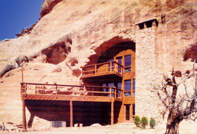
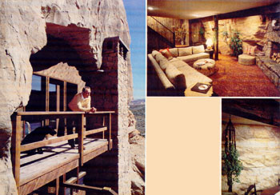

Native Americans enjoyed the warmth and security of natural cave shelters over a thousand years ago. Now there's
When groups of Anasazi (a Navaho word meaning "the old ones") built their homes in the cliffs of Mesa Verde-during the period between the ninth and fourteenth centuries-they did so for both practical and psychological reasons. The towering walls, of course, offered physical protection from the whims of the desert environment and from marauding bands of war-like nomads. But the rock itself was also a central aspect of Hopi, Zuni, and (somewhat later) Navaho spirituality ... it was seen as the source of man's origins in the four worlds below, the core of the universe, and the essence of the Mother Earth herself.
An integral part of each family's abode was the kiva, a ceremonial chamber most often set down into the ground and entered from above. Each kiva had a small hole, or sipapu -usually in front of the fireplace-which was the pathway down to (or up from) spiritual realms. The spirits which were invited to rise through the sipapu were called kachinas . . . though today the word is often used to describe the ethereal illustrations found on native American pottery.
To the north of the historic cliff dwellings-near the farthest reaches of the Hopi domain-outcrops of similar geological origin loom above the Colorado River . . . just west of Grand Junction, Colorado. There, nestled in a southwestern exposure of Mesozoic sandstone (the record of a former ocean's edges), stands a twentieth-century version of the ingenious Anasazi abodes. Like the pueblos (a Spanish word for "towns") of Chaco Canyon and Mesa Verde, Charles Nystrom's rock-sheltered home provides protection from the extremes of the high desert climate, and-in different but equally important ways-suits his own sense of spirituality.
The concept of a modern cliff dwelling was first suggested to Chuck by a friend -while they were rafting on the Colorado-and it proved to be an idea that the builder just couldn't get off his mind. For five full years he researched cave and cliff houses to develop a design that would combine brightness, security, and efficiency ... while still reflecting the heritage of the earliest proponents of cliff living. And when Chuck retired from his busy contracting practice in 1976, he set about "etching" his ideas in stone.
Since there were no natural openings of acceptable size on his property, Nystrom hired a mining firm's demolition expert to "help him make a suitable cave. They first experimented by blasting out a garage, and-after encountering no major technical problems-began dynamiting for the house in early 1977. Though the blasting man was skilled in mine excavation, the idea of making a hole for its own sake was new to him. So Chuck urged the expert to proceed slowly and carefully ... and it was nearly two months-and $9,600-later when the man-made cave was finished.
Once the excavation was done, the construction of the 1,920-square-foot, three-story interior actually turned out to be less difficult than that of a comparable "wide open spaces" building. Since a cave house requires weather protection on only one side, the retired contractor was able to avoid the effort (and expense) of placing insulation in the walls, floor, and ceiling . . . as well as that of installing waterproof roofing and siding. (However, Chuck did decide to insulate the floors of the second and third stories, to prevent any irritating thumps and squeaks from being transmitted to the rooms below.)
Basically, the "constructed" portion of the home consists of standard 2 X 4 stud walls on 16-inch centers, with dry wall on the inside and 3/8" plywood on the outside. A two- to three-foot air space surrounds the walls-as well as the ceiling and floor-to provide access for the installation and service of plumbing, electrical connections, and ducting.
When construction began, Chuck didn't know whether humidity would be a problem in his cave house. However, the porosity of the surrounding sandstone, combined with the vapor barrier provided by the open space between the rock and the wall, proved to be more than sufficient to prevent any such difficulties.
As another benefit, the home's design allowed cabinets, closets, and even bureaus to be recessed into the air space surrounding the walls. Thus the Nystrom house tends to have a relatively uncluttered interior . . . which makes more of its floor space available for use than would be the case in a conventional home.
Because a cliff dwelling offers significant savings in both materials and labor, the current cost of such a structure is about equal to that of a quality conventional home ... in the $40- to $45-per-square-foot range. However, Chuck hopes that he'll soon be able to improve the economy of the technique by using new ly developed hydraulic mining methods.
The actual construction of such a house is a job that almost any building contractor-or even a skilled do-it-yourselfer-could handle. Once the hole is prepared, the rest of the process is actually less complicated than are standard building techniques.
While Mr. Nystrom's cliff house cost about the same to build as most homes, it pays him a dividend every time he writes the check for his power bill. Chuck's annual heating and cooling expense--n the 5,500-degree-day Colorado western slope area-is about 1/10 that of a similar-sized tract home: an average of 34 cents a day, or about $125 per year. (The electricity consumed serves a heat pump-with resistive coils located in the distribution system for backup-which Chuck installed on a separate meter in order to accurately monitor his home's performance.)
The building's earth-sheltering obviously plays a large role in its energy efficiency. Only one wall touches outside air, and that bulwark is insulated with 6" fiberglass batt, as well as double-pane windows with a 1/2" air gap. The air space surrounding the other three walls, the ceiling, and the floor serves to moderate the difference between the interior and the gradually fluctuating rock temperature. (While the outside air may jump between -30 and 110 °F in a six-month period, the sandstone slowly swings between 60 and 73 °F!)
Because it has very limited outside exposure, Chuck's dwelling also has a very small infiltration loss. Still, the doorsand the concrete block and stone wall which covers the air space-are carefully weatherstripped to prevent intrusion of outside air.
Another watt-saving feature is the solar gain that's made possible by the home's 200-plus square feet of southwest-facing glass. In the winter, the sun's rays reach nearly to the back wall of the house . . . while the cave's overhang and the porches protect the interior from the summer sun. (During the fall or spring-when the local weather fluctuates greatly from day to day-reflective Mylar blinds can be lowered to shield the windows ... without interrupting the majestic view.)
Many visitors are surprised to find (Chuck tells us) that the cliff dwelling has the light and airy feel which results from natural illumination. In fact, it's difficult to believe that the abode is actually inside a cave. By designing the structure to be relatively tall and wide, Chuck has totally avoided the gloomy corners which can lead to that "dungeon" feeling.
The attractive interior finishing of the home takes full advantage of the available sunshine, too. Chuck has a love affair with wood, and the house's trim and cabinetry are predominantly made from light oak, with a minimum of handles and metal work. A motif of white pottery lamps and pots decorated with native American designs-all crafted by Don Gardner of Arvada, Colorado-completes the uncomplicated and attractive decorating scheme.
The top floor serves as the master bedroom and as Chuck's office, while the second story is occupied by the kitchen, living room, and dining room ... and provides the major egress. Steps-which are carved into the sandstone outcrop itself-lead up from ground level to a large overhanging porch and the front door.
Access from one floor to another is handled by a staircase at the rear of the building, and the steps leading down from the second story take the visitor to a room of markedly different character. Slightly below ground level-and mostly shaded by the porch above-the first floor manages to be serious without being somber. In modern American terminology the room would be referred to as a den, but in a cliff dwelling it must be called the kiva.
Here, one of the cheerful white walls-which brighten the upper rooms-has been abandoned . . . to reveal an expanse of fantastically cross-bedded sandstone braced by rough-hewn beams. The rock is actually the cave wall itself, sealed to keep down dust, and the ceiling is carefully fitted into a notch in the stone. Toward the front of the room the natural rock blends into a massive lichen-covered sandstone fireplace built by Chuck's brother Scott. And-as a small homage to his cliffdwelling forebears-Nystrom has added a four-inch-diameter hole that penetrates the hearth in front of the fire: the sipapu, from which the spirits come.
Although the practical application of Charles Nystrom's design will be limited by geography, you might be surprised to know that appropriate cliff-bearing rock formations actually span the country-from Mexico to Canada-in a 500-mile-wide swath. Chuck feels that there are plenty of places available for dwellings like his, and he'd like to see more of them built. In fact (along with his partners James Kindig, Norma Hazen, and Robert Keech), Chuck plans to build a number of new cliff homes on the 500 acres directly adjacent to the original experiment. The houses will be inconspicuously lodged in outcrops similar to that which shelters his own residence, and the bulk of the property will be held in common ownership.
For a "retired" contractor, Mr. Nystrom isn't exactly inactive. When he moved into his home in November of 1977, he was convinced that it was the last house he would build . . . but the concept of the cliff dwelling-with its efficiency, security, and historical ties-is an idea that he still can't get off his mind.
|
 CLOCKWISE FROM TOP: Charles Nystrom's latter-day cliff dwelling maintains the subtle earth tones common to the western Colorado environment. In fact, the massive chemney built by .... Chuck's brother Scott from rock removed during the blasting of the cave . . . Exposure to the cave's wall within the comfotable living space?along with a stone fireplace and wooden beams?helpt to maintain a feelin'of the home origins... The incredibly convoluted cross-bedding of the Mesozoic sandstone achieves textures unrivaled by human efforts... Chuck and his dog admire the wide open spaces. |
 |
|